Create an 'aurelhy' object that contains required data to perform AURELHY interpolation
aurelhy.RdAn 'aurelhy' object contains principal components calculated after the various variables describing the landscape,
as well as other useful descriptors. Use the predict() method to interpolate some data with the AURELHY method.
aurelhy(geotm, geomask, landmask = auremask(), x0 = 30, y0 = 30, step = 12,
nbr.pc = 10, scale = FALSE, model = "data ~ .", vgmodel = gstat::vgm(1, "Sph", 10, 1),
add.vars = NULL, var.name = NULL, resample.geomask = TRUE)
# S3 method for class 'aurelhy'
print(x, ...)
# S3 method for class 'aurelhy'
plot(x, y, main = "PCA on land descriptors", ...)
# S3 method for class 'aurelhy'
points(x, pch = ".", ...)
# S3 method for class 'aurelhy'
summary(object, ...)
# S3 method for class 'aurelhy'
update(object, nbr.pc, scale, model, vgmodel, ...)
# S3 method for class 'aurelhy'
predict(object, geopoints, variable, v.fit = NULL, ...)
# S3 method for class 'predict.aurelhy'
print(x, ...)
# S3 method for class 'predict.aurelhy'
summary(object, ...)
# S3 method for class 'predict.aurelhy'
plot(x, y, which = 1, ...)
# S3 method for class 'aurelhy'
as.geomat(x, what = "PC1", nodata = NA, ...)
# S3 method for class 'predict.aurelhy'
as.geomat(x,
what = c("Interpolated", "Predicted", "KrigedResiduals", "KrigeVariance"),
nodata = NA,...)Arguments
- geotm
a terrain model ('geotm' object) with enough resolution to be able to calculate all landscape descriptors (use
print()orplot()methods of an 'auremask' object used to calculate landscape descriptors to check your terrain model is dense enough).- geomask
a 'geomask' object with same resolution and coverage of the 'geotm' object or the final interpolation grid (with
resample.geomask = FALSE), and indicating which points should be considered for the interpolation (note that your terrain model must be larger than the targetted area by, at least, maximum distance of the mask in all directions in order to be able to calculate landscape descriptors for all considered points).- landmask
an 'auremask' object that defines the window of analysis used around each point ot calculate its landscape descriptors.
- x0
shift in X direction (longitude) where to consider the first point of the interpolation grid (note that interpolation grid must be less dense or equal to the terrain model grid, depending on the mask used).
- y0
shift in Y direction (latitude) for the first point of the interpolation grid.
- step
resolution of the interpolation grid, i.e., we keep one point every
steppoints from the original grid of the terrain model for constructing the interpolation grid.stepmust be a single integer larger or equal to one (may be equal to one only with rectangular 'auremask' objects).- nbr.pc
number of PCA's principal components to keep in the interpolation. This is the initial value; the example show you how you can change this after the 'aurelhy' object is calculated.
- scale
should we scale the landscape descriptors (variance = 1) before performing the PCA? If
scale = FALSE(by default), a PCA is run on the variance-covariance matrix (no scaling), otherwise, the PCA is run on the correlation matrix.- model
a formula describing the model used to predict the data. The left-hand side of the formula must always be 'data' and the right-hand considers all predictors separated by a plus sign. To use all predictors, specify
data ~ .(by default).- vgmodel
the variogram model to fit, as defined by the
gstat::vgm()function of the gstat package- add.vars
additional variable(s) measured at the same points as the geotm object, or the final interpolation grid. They will be used as additional predictors. The example show you how you can add or remove such variables after the 'aurelhy' object is calculated. If
NULL(by default), no additional variables will be used.- var.name
if
add.varsis a 'geomat' object, you can give the name you want to use for this predictor here.- resample.geomask
do we resample the geomask using
x0,y0andstepto get the final mask of calculated points? IfTRUE(by default), geomask should have the same grid as geotm. Otherwise, the geomask must exactly match the points where aurelhy should perform the interpolation. The default value allows for a backward-compatible behavior of the function (aurelhy version =< 1.0-2).- x
an 'aurelhy' or 'predict.aurelhy' object, depending on the method invoked
- y
a 'geopoints' object to create a plot best depicting the interpolation process, or nothing to just plot the interpolation grid.
- main
the main title of the graph
- pch
the symbol to use for plotting points. The default value,
pch = "."prints a small (usually one pixel size) square- object
an 'aurelhy' object
- geopoints
a 'geopoints' object with data to be interpolated.
- variable
the name of the variable in the 'geopoints' object to interpolate
- v.fit
the fitted variogram model used to krige residuals. If
NULL(by default), a fitted model for the variogram is calculated, starting from the model provided in the 'aurelhy' object, 'vgm' slot. IfFALSE, residuals are not kriged (useful, e.g., to save calculation time when one look for best predictors in the regression)- which
which graph to plot
- what
what is extracted as a 'geomat' object
- nodata
the code used to represent missing data in the 'geomat' object
- ...
further arguments passed to the function
Details
aurelhy() creates a new 'aurelhy' object. The object has print()
and plot() methods for further diagnostics. You should use the
predict() method to perform the AURELHY interpolation on some data. The
'aurelhy' object is also easy to save for further reuse (it is designed so
that the most time-consumming operations are done during its creation; so, it
is supposed to be generated only once and reused for different interpolations
on the same terrain model).
Value
An 'aurelhy' object with all information required to perform an AURELHY interpolation with any 'geopoints' data.
Source
Benichou P, Le Breton O (1987). Prise en compte de la topographie pour la cartographie des champs pluviometriques statistiques. La Meteorologie, 7:23-34.
Examples
# Create an aurelhy object for the Morocco terrain data
data(morocco) # The terrain model with a grid of about 924x924m
data(mbord) # A shape with the area around Morocco to analyze
data(mmask) # A 924x924m grid with a mask covering territory to analyze
data(mseadist) # The distance to the sea for territory to analyze
data(mrain) # Rain data measured at 43 stations to be interpolated
# Create a map with these data
image(morocco) # Plot the terrain model
grid()
lines(mbord, col = "red") # Add borders of territory to analyze in red
# Make sure we use all the stations from mrain in the geomask
mmask2 <- add.points(mmask, mrain)
# Now, create an aurelhy object with landscape description, using the
# first ten PCs, plus the distance to the sea (mseadist) for prediction
# Use a default radial window of analysis of 26km as maximum distance
# and an interpolation grid of 0.1x0.1degrees (roughly 11x11km)
# The variogram model is kept simple here, see ?gstat::vgm for other choices
# Be patient... this takes a little time to calculate!
maurelhy <- aurelhy(morocco, mmask2, auremask(), x0 = 30, y0 = 54, step = 12,
scale = TRUE, nbr.pc = 10, vgmodel = gstat::vgm(100, "Sph", 1, 1),
add.vars = mseadist, var.name = "seadist")
maurelhy
#> An aurelhy object to interpolate points in a terrain model:
#> A geotm object with a grid of 160 x 150
#> The cell size is 0.1°, that is approx. 11090 m in lat.
#> The grid spans from -17.05241° to -1.052414° long.
#> and from 20.94464° to 35.94464° lat.
#> Data are of type integer
#> Keeping 10 PCs from a PCA on scaled data
#>
#> Predictive variables are:
#> x, y, z, PC1, PC2, PC3, PC4, PC5, PC6, PC7, PC8, PC9, PC10, seadist
#>
#> Regression model is:
#> data ~ .
#> <environment: 0x5610cdd2b790>
#>
#> Variogram model is:
#> model psill range
#> 1 Nug 1 0
#> 2 Sph 100 1
points(maurelhy) # Add the interpolated points on the map
points(mrain, col = "red") # Add location of weather stations in red
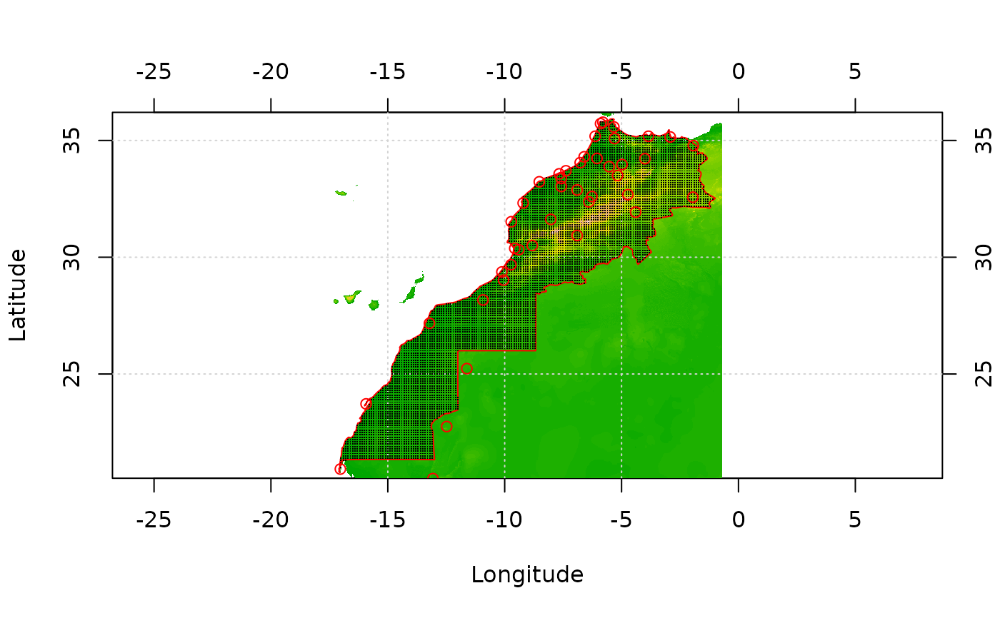
# Diagnostic of the PCA on land descriptors
summary(maurelhy)
#> Importance of components:
#> PC1 PC2 PC3 PC4 PC5 PC6 PC7
#> Standard deviation 4.2563 3.0000 1.91585 1.46404 1.11425 0.87457 0.84459
#> Proportion of Variance 0.4529 0.2250 0.09176 0.05359 0.03104 0.01912 0.01783
#> Cumulative Proportion 0.4529 0.6779 0.76965 0.82324 0.85428 0.87340 0.89123
#> PC8 PC9 PC10 PC11 PC12 PC13 PC14
#> Standard deviation 0.78604 0.68606 0.5899 0.57771 0.53711 0.53056 0.47875
#> Proportion of Variance 0.01545 0.01177 0.0087 0.00834 0.00721 0.00704 0.00573
#> Cumulative Proportion 0.90668 0.91844 0.9271 0.93549 0.94270 0.94974 0.95547
#> PC15 PC16 PC17 PC18 PC19 PC20 PC21
#> Standard deviation 0.42054 0.39558 0.38199 0.36180 0.34447 0.32917 0.31865
#> Proportion of Variance 0.00442 0.00391 0.00365 0.00327 0.00297 0.00271 0.00254
#> Cumulative Proportion 0.95989 0.96380 0.96745 0.97072 0.97369 0.97640 0.97893
#> PC22 PC23 PC24 PC25 PC26 PC27 PC28
#> Standard deviation 0.30930 0.29722 0.27640 0.27298 0.24637 0.23710 0.2278
#> Proportion of Variance 0.00239 0.00221 0.00191 0.00186 0.00152 0.00141 0.0013
#> Cumulative Proportion 0.98133 0.98353 0.98544 0.98731 0.98882 0.99023 0.9915
#> PC29 PC30 PC31 PC32 PC33 PC34 PC35
#> Standard deviation 0.21778 0.20592 0.19651 0.1898 0.17331 0.17147 0.15369
#> Proportion of Variance 0.00119 0.00106 0.00097 0.0009 0.00075 0.00074 0.00059
#> Cumulative Proportion 0.99271 0.99377 0.99474 0.9956 0.99639 0.99712 0.99771
#> PC36 PC37 PC38 PC39 PC40
#> Standard deviation 0.14557 0.1411 0.13678 0.12871 0.12266
#> Proportion of Variance 0.00053 0.0005 0.00047 0.00041 0.00038
#> Cumulative Proportion 0.99824 0.9987 0.99921 0.99962 1.00000
plot(maurelhy)
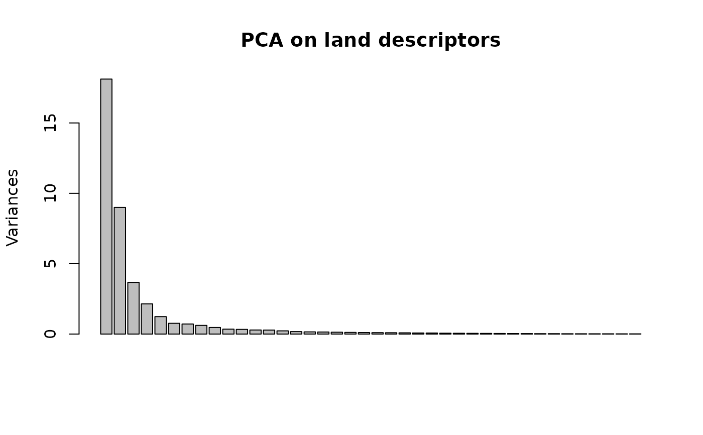
# Interpolate 'rain' variable on the considered territory around Morocco
# Since we do not want negative values for this variable and it is log-normally
# distributed, we will interpolate log10(rain) instead
mrain$logRain <- log10(mrain$rain)
pmrain <- predict(maurelhy, mrain, "logRain")
#> [adjusted R-squared is 0.956]
#> Warning: singular model in variogram fit
#> Warning: singular model in variogram fit
#> [using universal kriging]
pmrain
#> A predict.aurelhy object with interpolated values for variable 'logRain':
#>
#> Predictive variables are:
#> x, y, z, PC1, PC2, PC3, PC4, PC5, PC6, PC7, PC8, PC9, PC10, seadist
#>
#> Regression model (adjusted R-squared = 0.956) is:
#> data ~ .
#> <environment: 0x5610cdd2b790>
#> Predicted values are distributed as follows:
#> Min. 1st Qu. Median Mean 3rd Qu. Max.
#> 0.6683 1.5565 1.9224 1.9466 2.3983 3.5737
#> Residuals on provided predictors are distributed as follows:
#> Min. 1st Qu. Median Mean 3rd Qu. Max.
#> -0.128673 -0.023575 -0.002434 0.000000 0.032716 0.138138
#>
#> Variogram model for universal kriging of the residuals is:
#> model psill range
#> 1 Nug 0.003079182 0
#> 2 Sph 0.000000000 1
#> Kriged residuals are distributed as follows:
#> Min. 1st Qu. Median Mean 3rd Qu. Max.
#> -0.1287 0.0000 0.0000 0.0000 0.0000 0.1381
#>
#> Interpolated values for 'logRain' are distributed as follows:
#> Min. 1st Qu. Median Mean 3rd Qu. Max.
#> 0.6683 1.5565 1.9224 1.9466 2.3981 3.5737
# Diagnostic of regression model
summary(pmrain) # Significant predictors at alpha = 0.01 are x, y, PC3, PC6 and PC7
#>
#> Call:
#> lm(formula = model, data = pred)
#>
#> Residuals:
#> Min 1Q Median 3Q Max
#> -0.128673 -0.023575 -0.002434 0.032716 0.138138
#>
#> Coefficients:
#> Estimate Std. Error t value Pr(>|t|)
#> (Intercept) -3.6776234 0.6312486 -5.826 5.24e-06 ***
#> x -0.0658202 0.0172210 -3.822 0.000825 ***
#> y 0.1722831 0.0152375 11.307 4.24e-11 ***
#> z 0.0001586 0.0001041 1.524 0.140537
#> PC1 0.0128963 0.0102958 1.253 0.222427
#> PC2 0.0086366 0.0075729 1.140 0.265346
#> PC3 -0.0289542 0.0099024 -2.924 0.007429 **
#> PC4 0.0161374 0.0127922 1.262 0.219251
#> PC5 0.0252028 0.0333368 0.756 0.457003
#> PC6 -0.0753527 0.0228541 -3.297 0.003033 **
#> PC7 -0.0783908 0.0228653 -3.428 0.002199 **
#> PC8 -0.0301338 0.0202521 -1.488 0.149791
#> PC9 -0.0035077 0.0335837 -0.104 0.917684
#> PC10 0.0064643 0.0507897 0.127 0.899782
#> seadist -0.0004648 0.0003808 -1.221 0.234126
#> ---
#> Signif. codes: 0 ‘***’ 0.001 ‘**’ 0.01 ‘*’ 0.05 ‘.’ 0.1 ‘ ’ 1
#>
#> Residual standard error: 0.06767 on 24 degrees of freedom
#> Multiple R-squared: 0.9724, Adjusted R-squared: 0.9563
#> F-statistic: 60.35 on 14 and 24 DF, p-value: 3.134e-15
#>
# one could simplify the model as data ~ x + y + PC3 + PC6 + PC7
# but it is faster to keep the full model for final interpolation
# when we are only interested by the final interpolation or when processing
# is automated...
# Any of the predictors can be extracted from maurelhy as a geomat object
# for further inspection. For instance, let's look at PC3, PC6 and PC7 components
persp(as.geomat(maurelhy, "PC3"), expand = 50)
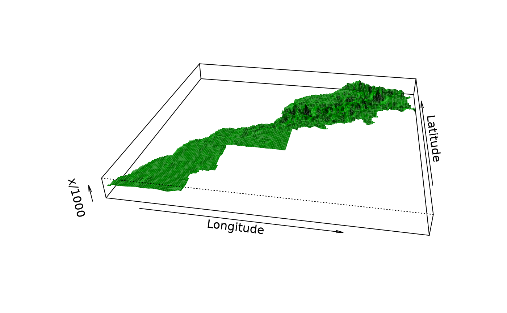
persp(as.geomat(maurelhy, "PC6"), expand = 50)
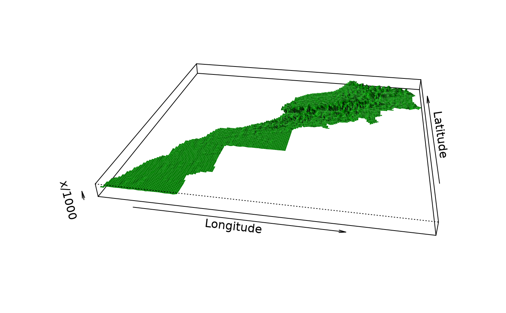
persp(as.geomat(maurelhy, "PC7"), expand = 50)
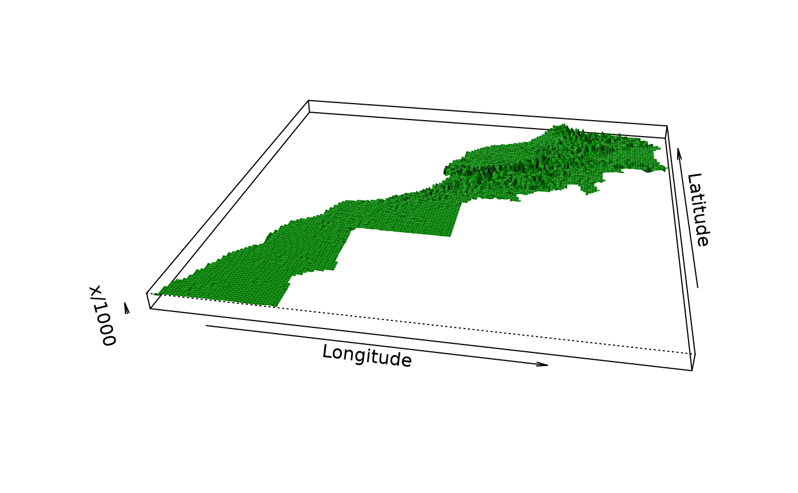
plot(pmrain, which = 1) # Residuals versus fitted (how residuals spread?)
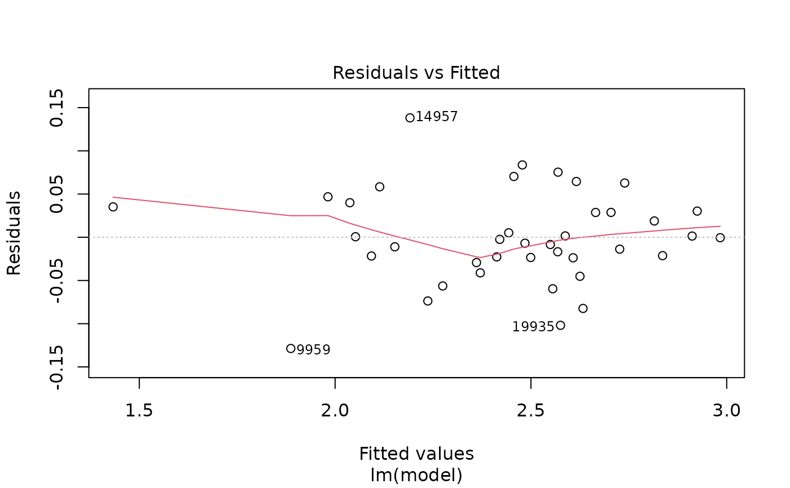
plot(pmrain, which = 2) # Normal Q-Q plot of residuals (residuals distribution)
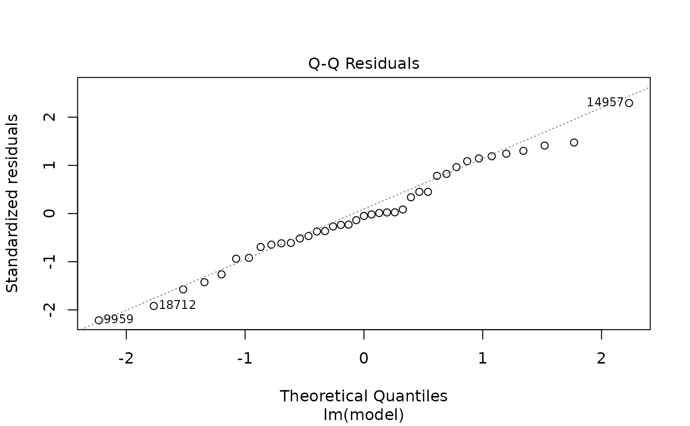
plot(pmrain, which = 3) # Best graph to look at residuals homoscedasticity
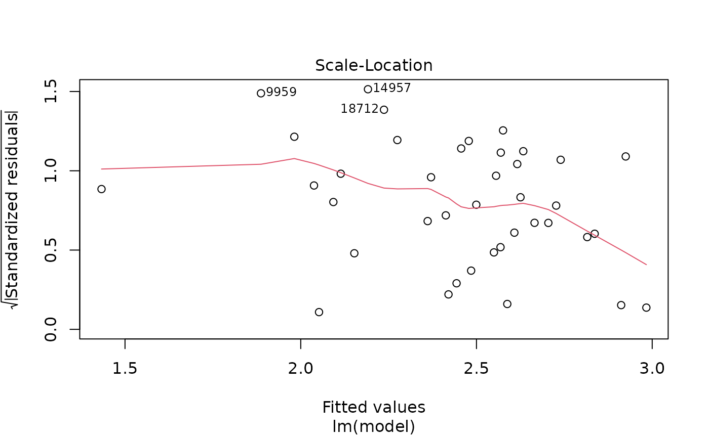
plot(pmrain, which = 4) # Cook's distance of residuals versus observation
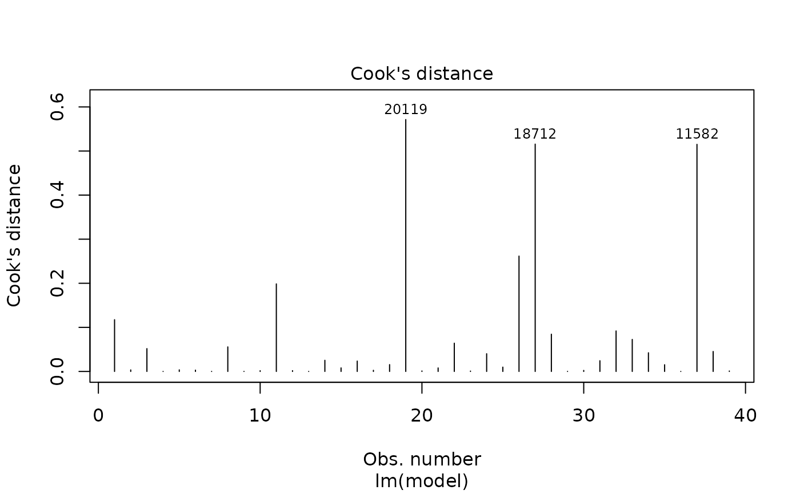
plot(pmrain, which = 5) # Residuals leverage: are there influencial points?
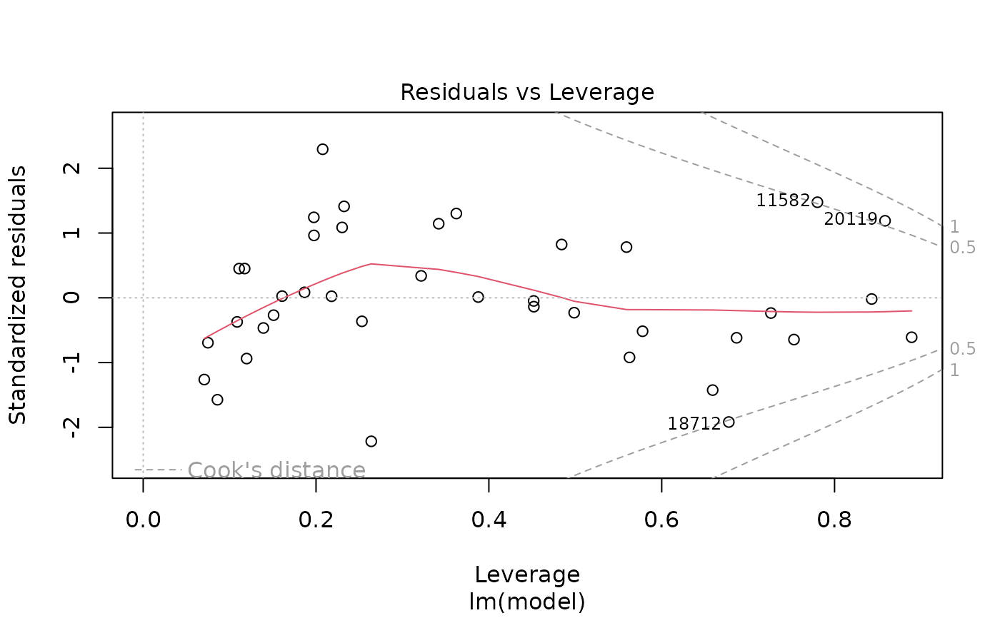
# Map of predicted values
filled.contour(as.geomat(pmrain, "Predicted"), asp = 1,
color.palette = terrain.colors, main = "Values predicted by the linear model")
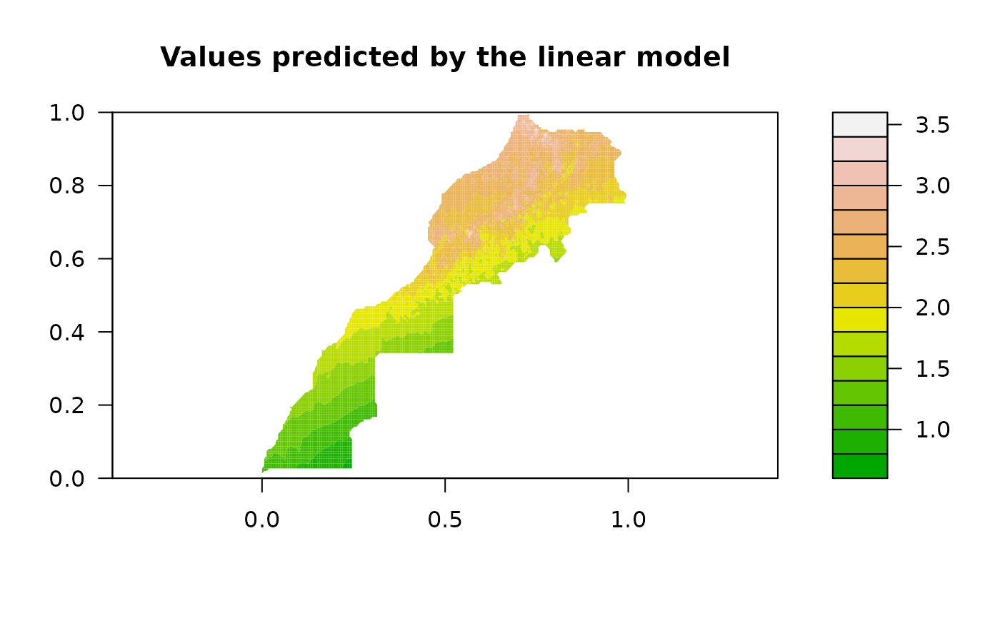
# Residuals kriging diagnostic
plot(pmrain, which = 6) # Semi-variogram and adjusted model
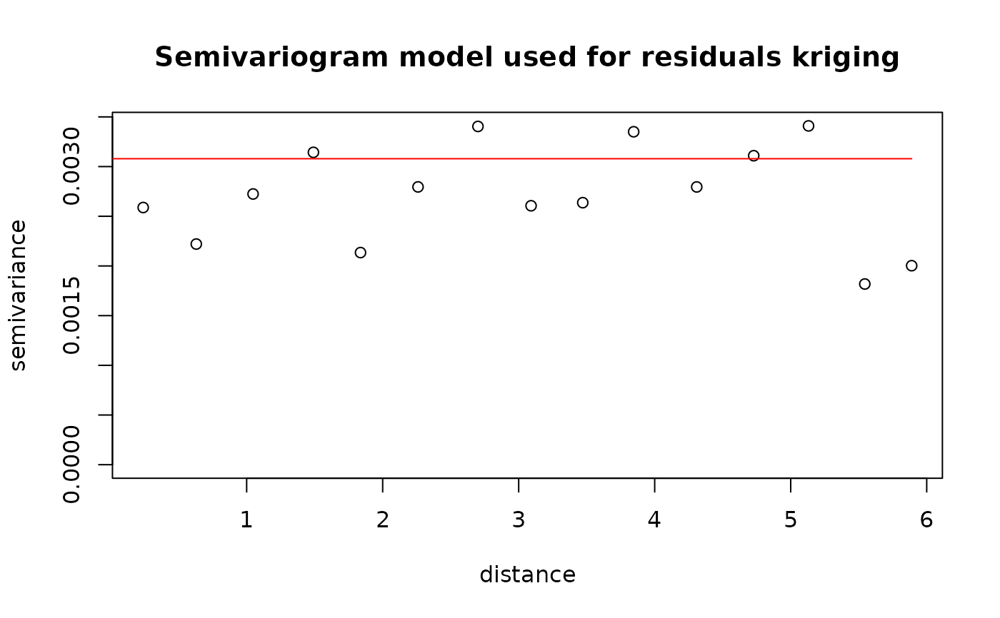
filled.contour(as.geomat(pmrain, "KrigedResiduals"), asp = 1,
color.palette = terrain.colors, main = "Kriged residuals")
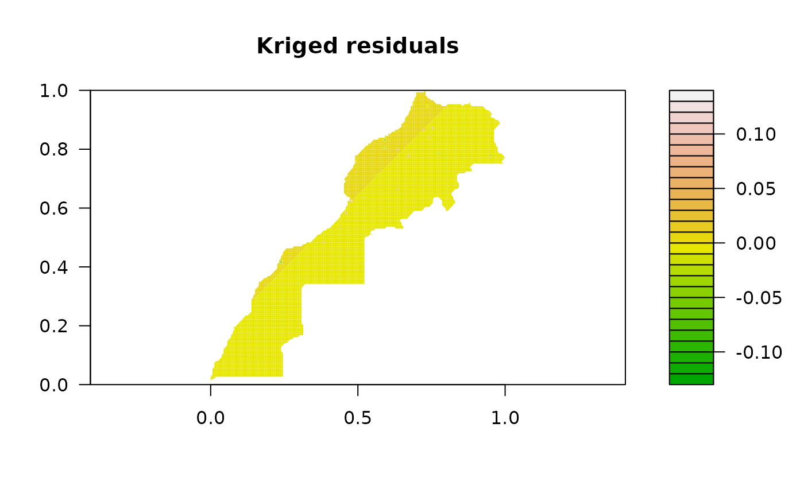
filled.contour(as.geomat(pmrain, "KrigeVariance"), asp = 1,
color.palette = terrain.colors, main = "Kriged residuals variance")
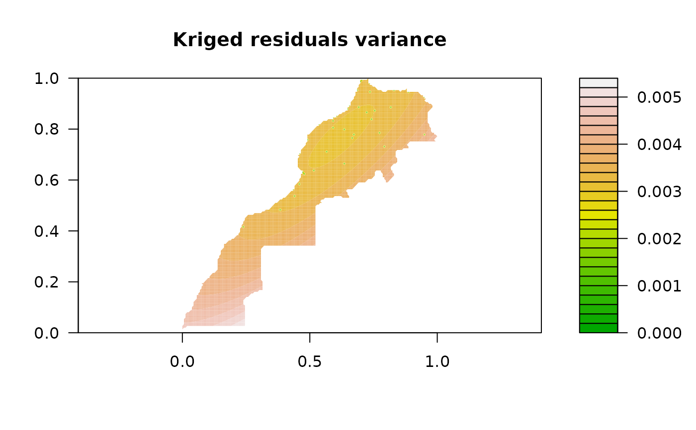
# As we can expect, kriging variance is larger in the south/south-west part
# where density of stations is low
# AURELHY interpolation diagnostic plots
# Graph showing the importance of predicted versus kriged residuals for
# all observations
plot(pmrain, which = 7) # Model prediction and kriged residuals
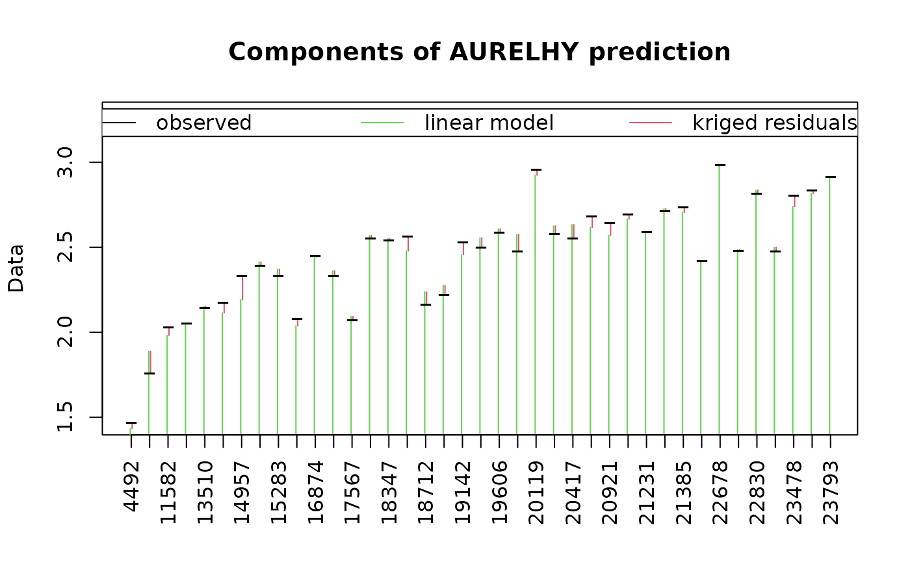
# Extract interpolated log(rain) and transform back into rain (mm)
geomrain <- as.geomat(pmrain)
geomrain <- 10^geomrain
# How is interpolated rain distributed?
range(geomrain, na.rm = TRUE)
#> [1] 4.659288 3747.111574
range(mrain$rain)
#> [1] 24.5 961.4
# Ooops! We have some very high values! How many?
sum(geomrain > 1000, na.rm = TRUE)
#> [1] 43
# This is probably due to a lack of data at high altitudes
# Let's truncate them to 1000 for a better graph
geomrain[geomrain > 1000] <- 1000
# ... and plot the result
image(geomrain, col = topo.colors(12))
contour(geomrain, add = TRUE)
lines(mbord, col = "red")
points(mrain, col = "red")
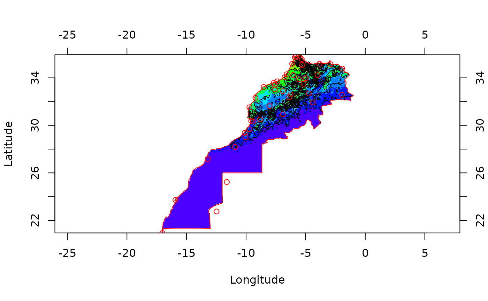
# A better plot for these interpolated rain data
filled.contour(coords(geomrain, "x"), coords(geomrain, "y"), geomrain,
asp = 1, xlab = "Longitude", ylab = "Latitude",
main = "AURELHY interpolated rain data", key.title = title(sub = "Rain (mm)\n\n"),
color.palette = colorRampPalette(c("red", "gray", "blue"), bias = 2))
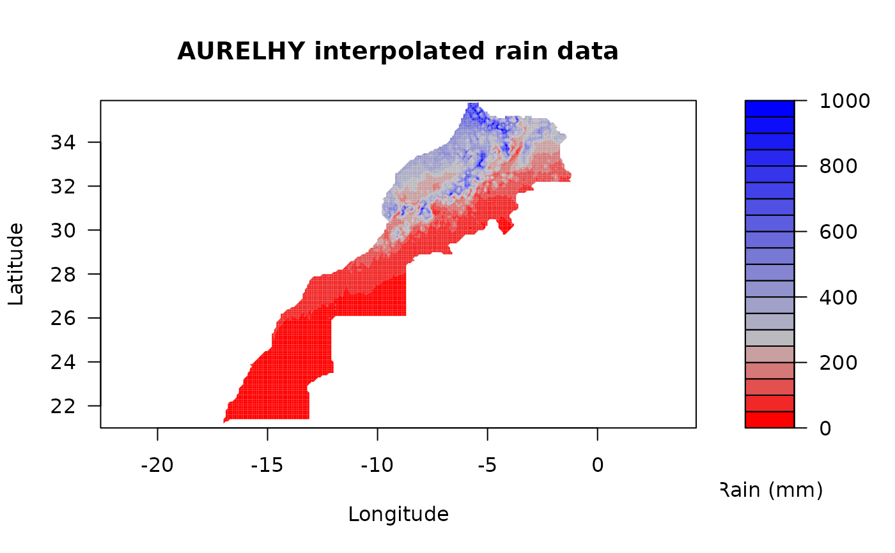
# One can experiment different interpolation parameters using update()
# Suppose we (1) don't want to scale PCs, (2) to keep only first 7 PCs,
# (3) we want an upgraded linear model like this:
# data <- a.x + b.y + c.z + d.PC3 + e.PC6 + f.PC7 + g.seadist + h.seadist^2 + i
# and (4) we want a Gaussian model for the semi-variogram
# (note that one can also regress against seadist2 <- seadist^2), just do:
# maurelhy2$seadist2 <- maurelhy$seadist^2
# Even with all these changes, you don't have to recompute maurelhy,
# just update() it and the costly steps of calculating landscape descriptors
# are reused (not the use of I() to protect calcs inside a formula)!
maurelhy2 <- update(maurelhy, scale = FALSE, nbr.pc = 7,
model = data ~ x + y + z + PC3 + PC6 + PC7 + seadist + I(seadist^2),
vgmodel = gstat::vgm(100, "Gau", 1, 1))
maurelhy2
#> An aurelhy object to interpolate points in a terrain model:
#> A geotm object with a grid of 160 x 150
#> The cell size is 0.1°, that is approx. 11090 m in lat.
#> The grid spans from -17.05241° to -1.052414° long.
#> and from 20.94464° to 35.94464° lat.
#> Data are of type integer
#>
#>
#> Keeping 7 PCs from a PCA on non-scaled data
#>
#> Predictive variables are:
#> x, y, z, seadist, PC1, PC2, PC3, PC4, PC5, PC6, PC7
#>
#> Regression model is:
#> data ~ x + y + z + PC3 + PC6 + PC7 + seadist + I(seadist^2)
#> <environment: 0x5610ce70e498>
#>
#> Variogram model is:
#> model psill range
#> 1 Nug 1 0
#> 2 Gau 100 1
# Diagnostic of the new PCA on land descriptors without scaling
summary(maurelhy2)
#> Importance of components:
#> PC1 PC2 PC3 PC4 PC5
#> Standard deviation 868.9669 690.4374 364.15732 278.30039 196.63042
#> Proportion of Variance 0.4476 0.2826 0.07862 0.04592 0.02292
#> Cumulative Proportion 0.4476 0.7302 0.80887 0.85478 0.87771
#> PC6 PC7 PC8 PC9 PC10
#> Standard deviation 175.24122 158.25418 135.92576 127.47496 113.50493
#> Proportion of Variance 0.01821 0.01485 0.01095 0.00963 0.00764
#> Cumulative Proportion 0.89591 0.91076 0.92171 0.93134 0.93898
#> PC11 PC12 PC13 PC14 PC15 PC16
#> Standard deviation 105.68148 99.55289 93.84086 88.79213 84.07756 79.75201
#> Proportion of Variance 0.00662 0.00588 0.00522 0.00467 0.00419 0.00377
#> Cumulative Proportion 0.94560 0.95148 0.95670 0.96137 0.96556 0.96933
#> PC17 PC18 PC19 PC20 PC21 PC22
#> Standard deviation 74.05424 69.64528 65.27751 61.57131 58.0412 55.79096
#> Proportion of Variance 0.00325 0.00288 0.00253 0.00225 0.0020 0.00185
#> Cumulative Proportion 0.97259 0.97546 0.97799 0.98023 0.9822 0.98408
#> PC23 PC24 PC25 PC26 PC27 PC28
#> Standard deviation 53.79148 52.55186 47.55454 46.60769 44.14101 43.98679
#> Proportion of Variance 0.00172 0.00164 0.00134 0.00129 0.00116 0.00115
#> Cumulative Proportion 0.98579 0.98743 0.98877 0.99006 0.99121 0.99236
#> PC29 PC30 PC31 PC32 PC33 PC34
#> Standard deviation 41.0182 40.84302 38.70327 36.06416 32.78410 31.7659
#> Proportion of Variance 0.0010 0.00099 0.00089 0.00077 0.00064 0.0006
#> Cumulative Proportion 0.9934 0.99435 0.99523 0.99601 0.99664 0.9972
#> PC35 PC36 PC37 PC38 PC39 PC40
#> Standard deviation 30.80766 29.33019 28.19433 27.15936 26.14326 25.07158
#> Proportion of Variance 0.00056 0.00051 0.00047 0.00044 0.00041 0.00037
#> Cumulative Proportion 0.99780 0.99831 0.99878 0.99922 0.99963 1.00000
plot(maurelhy2)
# Interpolate with the new parameters
pmrain2 <- predict(maurelhy2, mrain, "logRain")
#> [adjusted R-squared is 0.945]
#> Warning: No convergence after 200 iterations: try different initial values?
#> [using universal kriging]
summary(pmrain2)
#>
#> Call:
#> lm(formula = model, data = pred)
#>
#> Residuals:
#> Min 1Q Median 3Q Max
#> -0.126619 -0.043126 -0.005631 0.051824 0.124632
#>
#> Coefficients:
#> Estimate Std. Error t value Pr(>|t|)
#> (Intercept) -3.611e+00 4.938e-01 -7.313 3.83e-08 ***
#> x -6.060e-02 1.247e-02 -4.859 3.46e-05 ***
#> y 1.710e-01 1.232e-02 13.875 1.37e-14 ***
#> z 6.039e-05 7.530e-05 0.802 0.42883
#> PC3 -1.898e-04 4.074e-05 -4.659 6.09e-05 ***
#> PC6 -1.125e-04 7.451e-05 -1.510 0.14141
#> PC7 3.444e-04 1.386e-04 2.486 0.01872 *
#> seadist 1.327e-03 5.463e-04 2.429 0.02134 *
#> I(seadist^2) -4.317e-06 1.373e-06 -3.144 0.00374 **
#> ---
#> Signif. codes: 0 ‘***’ 0.001 ‘**’ 0.01 ‘*’ 0.05 ‘.’ 0.1 ‘ ’ 1
#>
#> Residual standard error: 0.07581 on 30 degrees of freedom
#> Multiple R-squared: 0.9567, Adjusted R-squared: 0.9451
#> F-statistic: 82.81 on 8 and 30 DF, p-value: < 2.2e-16
#>
# A couple of graphs
plot(pmrain2, which = 1) # Residuals versus fitted (how residuals spread?)
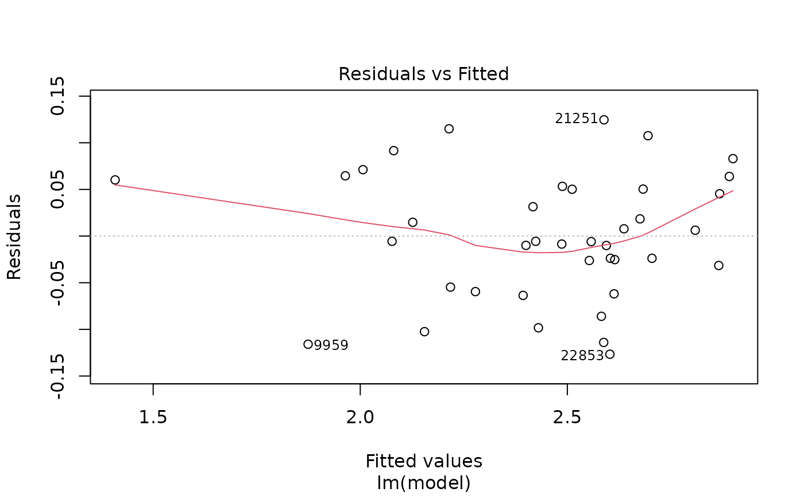
plot(pmrain, which = 6) # Semi-variogram and adjusted model
plot(pmrain2, which = 7) # Model prediction and kriged residuals
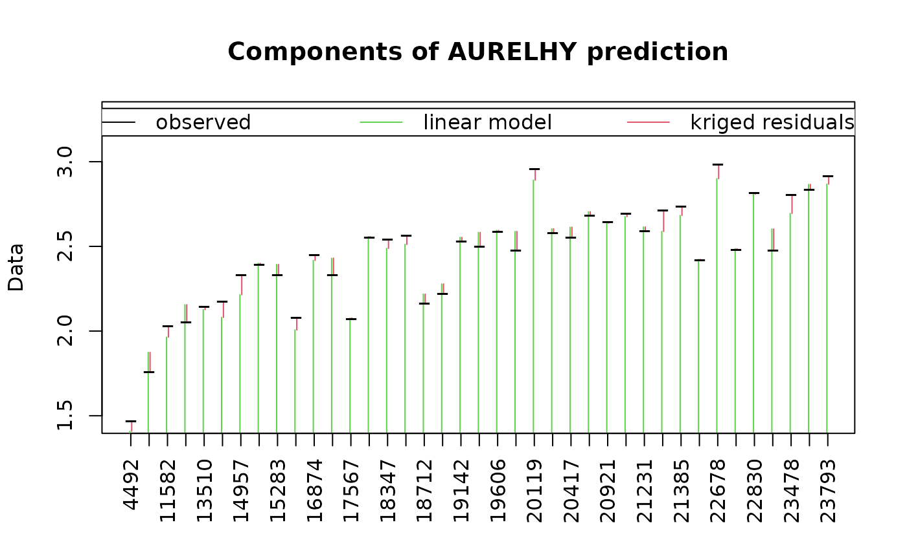
#... Explore as much as you like until you find the set of parameters that suits you!